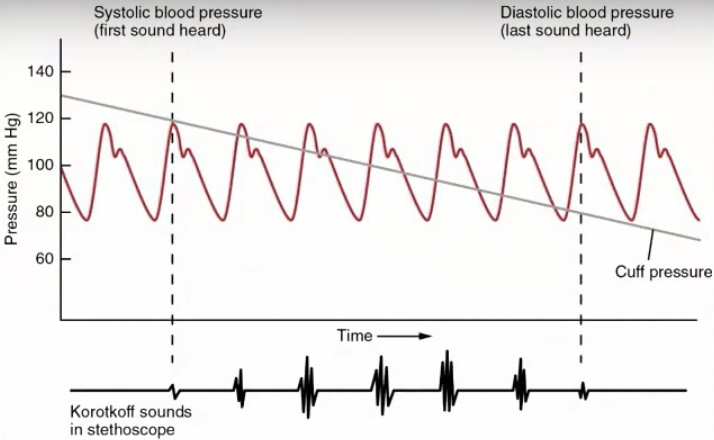

Breaking Down a Blood Pressure Monitor

Monitor turned on Pump starts Pressure regulator output value until a certain pressure is reached Pump truns off and air in the cuff starts to get released Value recorded as systolic pressure when the blood in the artery first starts to flow through Air in the cuff continues being released Value recorded as diatolic pressure when no more pulse were detected under the cuff
There are two types of blood presures: systolic (high), indicates how much pressure your blood is exerting against your artery walls when the heart beats & diastolc (low), indicates how much pressure your blood is exerting against your artery walls while the heart is resting between beats.
The line of impulse at the bottom of the image indicates the pulses that are detected by the monitor. The first sound heard (systolic pressure) is when the blood that was being blcoked previously starts to flow through the artery. As illustrated in the picture, this point is exactly when the pressure in the cuff are decresed to the value of the systolic pressure. Therefore, the blood can flow through, and the systolic blood pressure is equivalent as the pressure in the cuff at this moment. As the pressure in the cuff continues to decrease, more blood flows through and the pulse signal gets stronger. Afterwards, the impulse it feels from the artery starts to get weaker as the cuff loosening.
[Note: Think of when you use your finger to presse down on an artery. When you presse extremly hard, you don't feel anything because you blocked the blood from flowing. As you gradualy release your finger, you starts to feel something. However, once you are about to completely let go, you don't feel anything again, because you are barely touching it anymore.]